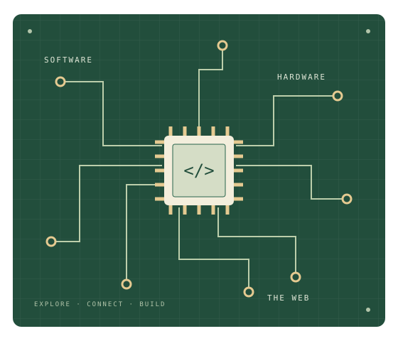

01 FRONTEND FUNDAMENTALS
A place on the web.
The personal site you're reading. Semantic HTML, an external stylesheet, responsive layouts, and an original illustration.
A WORK IN PROGRESS, IN THE BEST WAY
A small corner of the internet for my coursework, experiments, and things I'm learning about software and systems.
Explore my coursework
01 / ABOUT
I'm exploring the building blocks of the web through EE461L. This site is one of those experiments: a page made with just HTML and CSS, with attention to clear structure, readable typography, and the details that make a page feel finished.
Alongside it, I'm building a React interface for managing projects and shared hardware. Each exercise is a chance to connect a new concept to something practical.
02 / COURSEWORK
01 FRONTEND FUNDAMENTALS
The personal site you're reading. Semantic HTML, an external stylesheet, responsive layouts, and an original illustration.
02 COMPONENTS & STATE
A coursework demo for joining projects and checking shared hardware in and out, built from reusable React components.
03 / LEARNING
These are a few references behind the work. There is always another detail to understand, another component to improve, and another idea to try.